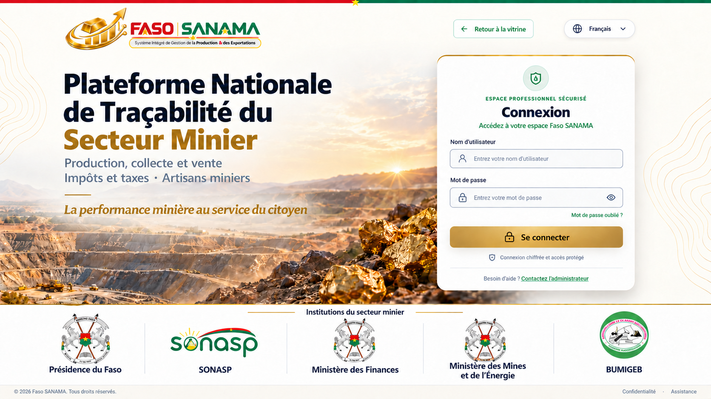
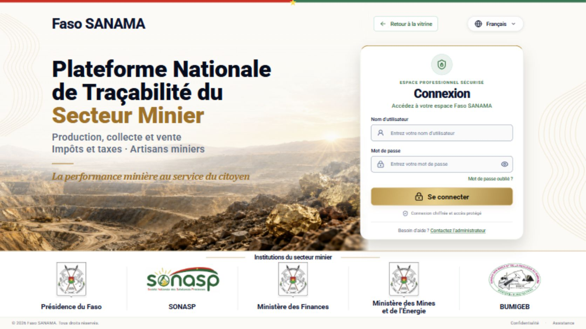

Comparaison de la maquette fournie avec la route /login exécutée localement. Le logo original Faso SANAMA est encore manquant : la capture montre le repli textuel. Les emblèmes officiels conservent leur forme originale, différente des versions stylisées de la maquette. Le décor a été reconstitué séparément.

